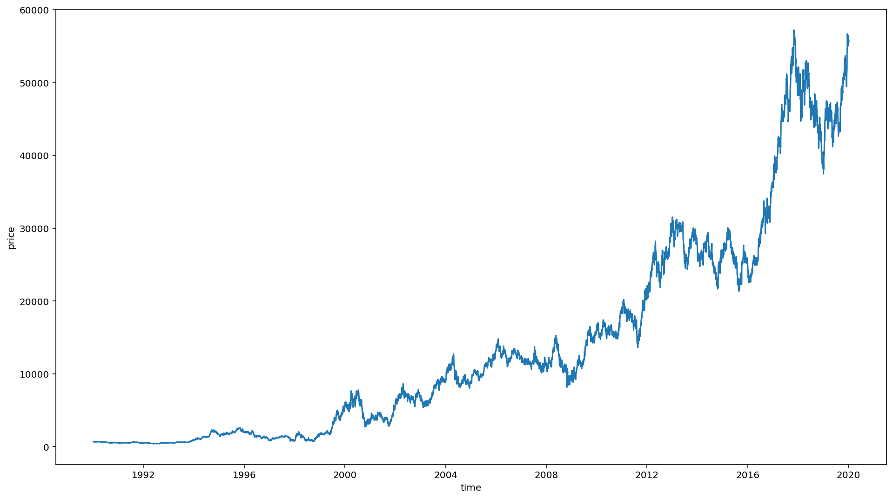
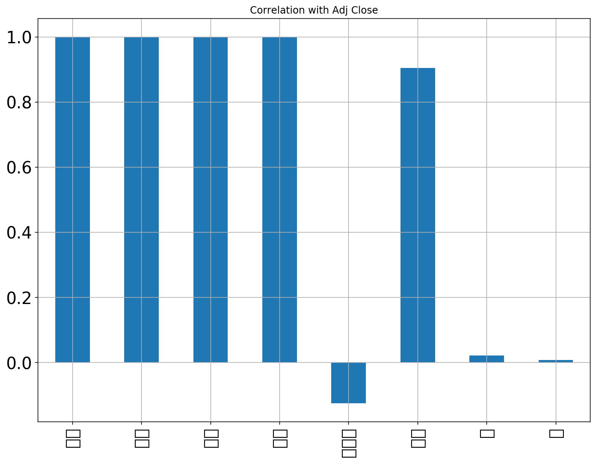
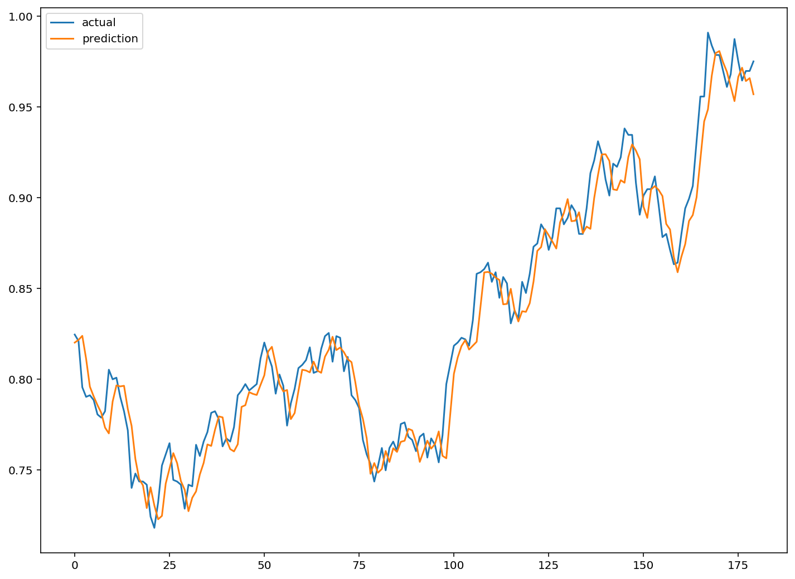

import pandas as pd
import numpy as np
import matplotlib.pyplot as plt
import seaborn as sns
import warnings
import os
%matplotlib inline
warnings.filterwarnings('ignore')
plt.rcParams['font.family'] = 'NanumGothic'날짜형 컬럼으로 변환
%config InlineBackend.figure_format = 'retina'
!apt -qq -y install fonts-nanumThe following NEW packages will be installed:
fonts-nanum
0 upgraded, 1 newly installed, 0 to remove and 25 not upgraded.
Need to get 9,604 kB of archives.
After this operation, 29.5 MB of additional disk space will be used.
Selecting previously unselected package fonts-nanum.
(Reading database ... 145118 files and directories currently installed.)
Preparing to unpack .../fonts-nanum_20170925-1_all.deb ...
Unpacking fonts-nanum (20170925-1) ...
Setting up fonts-nanum (20170925-1) ...
Processing triggers for fontconfig (2.12.6-0ubuntu2) ...import matplotlib as mpl
import matplotlib.font_manager as fm
fontpath = '/usr/share/fonts/truetype/nanum/NanumBarunGothic.ttf'
font = fm.FontProperties(fname=fontpath, size=9)
plt.rc('font', family='NanumBarunGothic')
mpl.font_manager._rebuild()from google.colab import drive
drive.mount('/content/drive')Go to this URL in a browser: https://accounts.google.com/o/oauth2/auth?client_id=947318989803-6bn6qk8qdgf4n4g3pfee6491hc0brc4i.apps.googleusercontent.com&redirect_uri=urn%3aietf%3awg%3aoauth%3a2.0%3aoob&response_type=code&scope=email%20https%3a%2f%2fwww.googleapis.com%2fauth%2fdocs.test%20https%3a%2f%2fwww.googleapis.com%2fauth%2fdrive%20https%3a%2f%2fwww.googleapis.com%2fauth%2fdrive.photos.readonly%20https%3a%2f%2fwww.googleapis.com%2fauth%2fpeopleapi.readonly
Enter your authorization code:
··········
Mounted at /content/drivedata_path = '/content/drive/My Drive/Colab Notebooks/03-stock-samsung/data'
model_path = '/content/drive/My Drive/Colab Notebooks/03-stock-samsung/model'df_price = pd.read_csv(os.path.join(data_path, '01-삼성전자-주가.csv'), encoding='utf8')
df_buyer = pd.read_csv(os.path.join(data_path, '02-삼성전자-매매동향.csv'), encoding='utf8')df_price.describe()| 일자 | 시가 | 고가 | 저가 | 종가 | 거래량 | |
|---|---|---|---|---|---|---|
| count | 9.288000e+03 | 9288.000000 | 9288.000000 | 9288.000000 | 9288.000000 | 9.288000e+03 |
| mean | 2.001347e+07 | 11108.556417 | 11228.754522 | 10986.106481 | 11108.235465 | 1.645823e+07 |
| std | 1.015376e+05 | 13792.646300 | 13920.105135 | 13658.809496 | 13790.922497 | 1.701535e+07 |
| min | 1.985010e+07 | 116.000000 | 116.000000 | 115.000000 | 116.000000 | 0.000000e+00 |
| 25% | 1.992121e+07 | 624.000000 | 632.000000 | 620.000000 | 623.000000 | 3.833986e+06 |
| 50% | 2.001032e+07 | 5045.000000 | 5190.000000 | 4955.000000 | 5075.000000 | 1.199608e+07 |
| 75% | 2.010080e+07 | 15920.000000 | 16050.000000 | 15740.000000 | 15920.000000 | 2.284080e+07 |
| max | 2.020011e+07 | 57500.000000 | 57520.000000 | 56760.000000 | 57220.000000 | 3.266220e+08 |
format 지정을 반드시 해줘야만 정상적으로 동작함
pd.to_datetime(df_price['일자'], format='%Y%m%d')0 2020-01-07
1 2020-01-06
2 2020-01-03
3 2020-01-02
4 2019-12-30
...
9283 1985-01-09
9284 1985-01-08
9285 1985-01-07
9286 1985-01-05
9287 1985-01-04
Name: 일자, Length: 9288, dtype: datetime64[ns]df_price['일자'] = pd.to_datetime(df_price['일자'], format='%Y%m%d')df_price['일자'].head()0 2020-01-07
1 2020-01-06
2 2020-01-03
3 2020-01-02
4 2019-12-30
Name: 일자, dtype: datetime64[ns]df_price.head()| 일자 | 시가 | 고가 | 저가 | 종가 | 거래량 | |
|---|---|---|---|---|---|---|
| 0 | 2020-01-07 | 55700 | 56400 | 55600 | 55800 | 9893846 |
| 1 | 2020-01-06 | 54900 | 55600 | 54600 | 55500 | 10278951 |
| 2 | 2020-01-03 | 56000 | 56600 | 54900 | 55500 | 15422255 |
| 3 | 2020-01-02 | 55500 | 56000 | 55000 | 55200 | 12993228 |
| 4 | 2019-12-30 | 56200 | 56600 | 55700 | 55800 | 8356767 |
df_price['연도'] =df_price['일자'].dt.year
df_price['월'] =df_price['일자'].dt.month
df_price['일'] =df_price['일자'].dt.daydf_price.head()| 일자 | 시가 | 고가 | 저가 | 종가 | 거래량 | 연도 | 월 | 일 | |
|---|---|---|---|---|---|---|---|---|---|
| 0 | 2020-01-07 | 55700 | 56400 | 55600 | 55800 | 9893846 | 2020 | 1 | 7 |
| 1 | 2020-01-06 | 54900 | 55600 | 54600 | 55500 | 10278951 | 2020 | 1 | 6 |
| 2 | 2020-01-03 | 56000 | 56600 | 54900 | 55500 | 15422255 | 2020 | 1 | 3 |
| 3 | 2020-01-02 | 55500 | 56000 | 55000 | 55200 | 12993228 | 2020 | 1 | 2 |
| 4 | 2019-12-30 | 56200 | 56600 | 55700 | 55800 | 8356767 | 2019 | 12 | 30 |
시각화
df = df_price.loc[df_price['연도']>=1990]plt.figure(figsize=(16, 9))
sns.lineplot(y=df['종가'], x=df['일자'])
plt.xlabel('time')
plt.ylabel('price')Text(0, 0.5, 'price')findfont: Font family ['NanumBarunGothic'] not found. Falling back to DejaVu Sans.
df.corrwith(df['종가']).plot.bar(
figsize = (12, 9), title = "Correlation with Adj Close", fontsize = 20,
rot = 90, grid = True)findfont: Font family ['NanumBarunGothic'] not found. Falling back to DejaVu Sans.
findfont: Font family ['NanumBarunGothic'] not found. Falling back to DejaVu Sans.
df = df.sort_index(ascending=False).reset_index(drop=True)df| 일자 | 시가 | 고가 | 저가 | 종가 | 거래량 | 연도 | 월 | 일 | |
|---|---|---|---|---|---|---|---|---|---|
| 0 | 1990-01-03 | 673 | 689 | 661 | 685 | 1715032 | 1990 | 1 | 3 |
| 1 | 1990-01-04 | 689 | 701 | 685 | 693 | 2738562 | 1990 | 1 | 4 |
| 2 | 1990-01-05 | 689 | 693 | 678 | 678 | 1790849 | 1990 | 1 | 5 |
| 3 | 1990-01-06 | 685 | 689 | 681 | 681 | 1724183 | 1990 | 1 | 6 |
| 4 | 1990-01-08 | 681 | 687 | 673 | 673 | 966666 | 1990 | 1 | 8 |
| ... | ... | ... | ... | ... | ... | ... | ... | ... | ... |
| 7823 | 2019-12-30 | 56200 | 56600 | 55700 | 55800 | 8356767 | 2019 | 12 | 30 |
| 7824 | 2020-01-02 | 55500 | 56000 | 55000 | 55200 | 12993228 | 2020 | 1 | 2 |
| 7825 | 2020-01-03 | 56000 | 56600 | 54900 | 55500 | 15422255 | 2020 | 1 | 3 |
| 7826 | 2020-01-06 | 54900 | 55600 | 54600 | 55500 | 10278951 | 2020 | 1 | 6 |
| 7827 | 2020-01-07 | 55700 | 56400 | 55600 | 55800 | 9893846 | 2020 | 1 | 7 |
7828 rows × 9 columns
from sklearn.preprocessing import MinMaxScalerscaler = MinMaxScaler()scale_cols = ['시가', '고가', '저가', '종가', '거래량']df_scaled = scaler.fit_transform(df[scale_cols])df_scaled = pd.DataFrame(df_scaled)
df_scaled.columns = scale_colsdf_scaled| 시가 | 고가 | 저가 | 종가 | 거래량 | |
|---|---|---|---|---|---|
| 0 | 0.004955 | 0.005129 | 0.004860 | 0.005138 | 0.005251 |
| 1 | 0.005236 | 0.005339 | 0.005286 | 0.005279 | 0.008384 |
| 2 | 0.005236 | 0.005199 | 0.005162 | 0.005015 | 0.005483 |
| 3 | 0.005165 | 0.005129 | 0.005215 | 0.005068 | 0.005279 |
| 4 | 0.005095 | 0.005094 | 0.005073 | 0.004927 | 0.002960 |
| ... | ... | ... | ... | ... | ... |
| 7823 | 0.977237 | 0.983895 | 0.981197 | 0.975012 | 0.025585 |
| 7824 | 0.964980 | 0.973391 | 0.968779 | 0.964454 | 0.039781 |
| 7825 | 0.973735 | 0.983895 | 0.967005 | 0.969733 | 0.047217 |
| 7826 | 0.954474 | 0.966389 | 0.961684 | 0.969733 | 0.031470 |
| 7827 | 0.968482 | 0.980394 | 0.979423 | 0.975012 | 0.030291 |
7828 rows × 5 columns
train, test 사이즈 정의
TEST_SIZE = 200
WINDOW_SIZE = 20train = df_scaled[:-TEST_SIZE]
train| 시가 | 고가 | 저가 | 종가 | 거래량 | |
|---|---|---|---|---|---|
| 0 | 0.004955 | 0.005129 | 0.004860 | 0.005138 | 0.005251 |
| 1 | 0.005236 | 0.005339 | 0.005286 | 0.005279 | 0.008384 |
| 2 | 0.005236 | 0.005199 | 0.005162 | 0.005015 | 0.005483 |
| 3 | 0.005165 | 0.005129 | 0.005215 | 0.005068 | 0.005279 |
| 4 | 0.005095 | 0.005094 | 0.005073 | 0.004927 | 0.002960 |
| ... | ... | ... | ... | ... | ... |
| 7623 | 0.768867 | 0.779952 | 0.776311 | 0.778802 | 0.035001 |
| 7624 | 0.767992 | 0.771199 | 0.768329 | 0.764725 | 0.024825 |
| 7625 | 0.758361 | 0.768574 | 0.765668 | 0.764725 | 0.055229 |
| 7626 | 0.760112 | 0.767698 | 0.768329 | 0.770884 | 0.051479 |
| 7627 | 0.762739 | 0.765948 | 0.763894 | 0.762085 | 0.025071 |
7628 rows × 5 columns
test = df_scaled[-TEST_SIZE:]
test.head()| 시가 | 고가 | 저가 | 종가 | 거래량 | |
|---|---|---|---|---|---|
| 7628 | 0.759237 | 0.761571 | 0.765668 | 0.765604 | 0.023298 |
| 7629 | 0.760112 | 0.766823 | 0.757685 | 0.768244 | 0.030146 |
| 7630 | 0.774120 | 0.802710 | 0.774537 | 0.799919 | 0.064717 |
| 7631 | 0.813518 | 0.815839 | 0.813563 | 0.812237 | 0.038380 |
| 7632 | 0.786377 | 0.792206 | 0.787842 | 0.793760 | 0.026635 |
def make_dataset(data, label, window_size=20):
feature_list = []
label_list = []
for i in range(len(data) - window_size):
feature_list.append(np.array(data.iloc[i:i+window_size]))
label_list.append(np.array(label.iloc[i+window_size]))
return np.array(feature_list), np.array(label_list)feature_cols = ['시가', '고가', '저가', '거래량']
label_cols = ['종가']train_feature = train[feature_cols]
train_label = train[label_cols]train_feature, train_label = make_dataset(train_feature, train_label, 20)from sklearn.model_selection import train_test_splitx_train, x_valid, y_train, y_valid = train_test_split(train_feature, train_label, test_size=0.2)x_train.shape, x_valid.shape((6086, 20, 4), (1522, 20, 4)) test_feature = test[feature_cols]
test_label = test[label_cols]test_feature.shape, test_label.shape((200, 4), (200, 1))test_feature, test_label = make_dataset(test_feature, test_label, 20)test_feature.shape, test_label.shape((180, 20, 4), (180, 1))train_feature.shape[1], train_feature.shape[0](20, 7608)from keras.models import Sequential
from keras.layers import Dense
from keras.callbacks import EarlyStopping, ModelCheckpoint
from keras.layers import LSTM
model = Sequential()
model.add(LSTM(16,
input_shape=(train_feature.shape[1], train_feature.shape[2]),
activation='relu',
return_sequences=False)
)
# model.add(LSTM(16, return_sequences=False))
# model.add(Dense(16, activation='linear'))
model.add(Dense(1))Using TensorFlow backend.
The default version of TensorFlow in Colab will soon switch to TensorFlow 2.x.
We recommend you upgrade now
or ensure your notebook will continue to use TensorFlow 1.x via the %tensorflow_version 1.x magic:
more info.
WARNING:tensorflow:From /usr/local/lib/python3.6/dist-packages/keras/backend/tensorflow_backend.py:66: The name tf.get_default_graph is deprecated. Please use tf.compat.v1.get_default_graph instead.
WARNING:tensorflow:From /usr/local/lib/python3.6/dist-packages/keras/backend/tensorflow_backend.py:541: The name tf.placeholder is deprecated. Please use tf.compat.v1.placeholder instead.
WARNING:tensorflow:From /usr/local/lib/python3.6/dist-packages/keras/backend/tensorflow_backend.py:4432: The name tf.random_uniform is deprecated. Please use tf.random.uniform instead.
model.compile(loss='mean_squared_error', optimizer='adam')
early_stop = EarlyStopping(monitor='val_loss', patience=5)
filename = os.path.join(model_path, 'tmp_checkpoint.h5')
checkpoint = ModelCheckpoint(filename, monitor='val_loss', verbose=1, save_best_only=True, mode='auto')
history = model.fit(x_train, y_train,
epochs=200,
batch_size=16,
validation_data=(x_valid, y_valid),
callbacks=[early_stop, checkpoint])WARNING:tensorflow:From /usr/local/lib/python3.6/dist-packages/keras/optimizers.py:793: The name tf.train.Optimizer is deprecated. Please use tf.compat.v1.train.Optimizer instead.
WARNING:tensorflow:From /usr/local/lib/python3.6/dist-packages/tensorflow_core/python/ops/math_grad.py:1424: where (from tensorflow.python.ops.array_ops) is deprecated and will be removed in a future version.
Instructions for updating:
Use tf.where in 2.0, which has the same broadcast rule as np.where
WARNING:tensorflow:From /usr/local/lib/python3.6/dist-packages/keras/backend/tensorflow_backend.py:1033: The name tf.assign_add is deprecated. Please use tf.compat.v1.assign_add instead.
WARNING:tensorflow:From /usr/local/lib/python3.6/dist-packages/keras/backend/tensorflow_backend.py:1020: The name tf.assign is deprecated. Please use tf.compat.v1.assign instead.
WARNING:tensorflow:From /usr/local/lib/python3.6/dist-packages/keras/backend/tensorflow_backend.py:3005: The name tf.Session is deprecated. Please use tf.compat.v1.Session instead.
Train on 6086 samples, validate on 1522 samples
Epoch 1/200
WARNING:tensorflow:From /usr/local/lib/python3.6/dist-packages/keras/backend/tensorflow_backend.py:190: The name tf.get_default_session is deprecated. Please use tf.compat.v1.get_default_session instead.
WARNING:tensorflow:From /usr/local/lib/python3.6/dist-packages/keras/backend/tensorflow_backend.py:197: The name tf.ConfigProto is deprecated. Please use tf.compat.v1.ConfigProto instead.
WARNING:tensorflow:From /usr/local/lib/python3.6/dist-packages/keras/backend/tensorflow_backend.py:207: The name tf.global_variables is deprecated. Please use tf.compat.v1.global_variables instead.
WARNING:tensorflow:From /usr/local/lib/python3.6/dist-packages/keras/backend/tensorflow_backend.py:216: The name tf.is_variable_initialized is deprecated. Please use tf.compat.v1.is_variable_initialized instead.
WARNING:tensorflow:From /usr/local/lib/python3.6/dist-packages/keras/backend/tensorflow_backend.py:223: The name tf.variables_initializer is deprecated. Please use tf.compat.v1.variables_initializer instead.
6086/6086 [==============================] - 23s 4ms/step - loss: 0.0030 - val_loss: 1.0960e-04
Epoch 00001: val_loss improved from inf to 0.00011, saving model to /content/drive/My Drive/Colab Notebooks/03-stock-samsung/model/tmp_checkpoint.h5
Epoch 2/200
6086/6086 [==============================] - 13s 2ms/step - loss: 1.0708e-04 - val_loss: 1.0215e-04
Epoch 00002: val_loss improved from 0.00011 to 0.00010, saving model to /content/drive/My Drive/Colab Notebooks/03-stock-samsung/model/tmp_checkpoint.h5
Epoch 3/200
6086/6086 [==============================] - 13s 2ms/step - loss: 9.6912e-05 - val_loss: 1.1146e-04
Epoch 00003: val_loss did not improve from 0.00010
Epoch 4/200
6086/6086 [==============================] - 13s 2ms/step - loss: 9.2579e-05 - val_loss: 9.3685e-05
Epoch 00004: val_loss improved from 0.00010 to 0.00009, saving model to /content/drive/My Drive/Colab Notebooks/03-stock-samsung/model/tmp_checkpoint.h5
Epoch 5/200
6086/6086 [==============================] - 13s 2ms/step - loss: 8.7080e-05 - val_loss: 7.8300e-05
Epoch 00005: val_loss improved from 0.00009 to 0.00008, saving model to /content/drive/My Drive/Colab Notebooks/03-stock-samsung/model/tmp_checkpoint.h5
Epoch 6/200
6086/6086 [==============================] - 13s 2ms/step - loss: 8.5239e-05 - val_loss: 6.7357e-05
Epoch 00006: val_loss improved from 0.00008 to 0.00007, saving model to /content/drive/My Drive/Colab Notebooks/03-stock-samsung/model/tmp_checkpoint.h5
Epoch 7/200
6086/6086 [==============================] - 13s 2ms/step - loss: 8.3984e-05 - val_loss: 7.2163e-05
Epoch 00007: val_loss did not improve from 0.00007
Epoch 8/200
6086/6086 [==============================] - 12s 2ms/step - loss: 7.8821e-05 - val_loss: 1.1928e-04
Epoch 00008: val_loss did not improve from 0.00007
Epoch 9/200
6086/6086 [==============================] - 12s 2ms/step - loss: 7.1944e-05 - val_loss: 6.1163e-05
Epoch 00009: val_loss improved from 0.00007 to 0.00006, saving model to /content/drive/My Drive/Colab Notebooks/03-stock-samsung/model/tmp_checkpoint.h5
Epoch 10/200
6086/6086 [==============================] - 12s 2ms/step - loss: 6.7768e-05 - val_loss: 9.8321e-05
Epoch 00010: val_loss did not improve from 0.00006
Epoch 11/200
6086/6086 [==============================] - 12s 2ms/step - loss: 6.6246e-05 - val_loss: 5.9567e-05
Epoch 00011: val_loss improved from 0.00006 to 0.00006, saving model to /content/drive/My Drive/Colab Notebooks/03-stock-samsung/model/tmp_checkpoint.h5
Epoch 12/200
6086/6086 [==============================] - 12s 2ms/step - loss: 6.9680e-05 - val_loss: 9.5707e-05
Epoch 00012: val_loss did not improve from 0.00006
Epoch 13/200
6086/6086 [==============================] - 12s 2ms/step - loss: 6.7789e-05 - val_loss: 5.8716e-05
Epoch 00013: val_loss improved from 0.00006 to 0.00006, saving model to /content/drive/My Drive/Colab Notebooks/03-stock-samsung/model/tmp_checkpoint.h5
Epoch 14/200
6086/6086 [==============================] - 12s 2ms/step - loss: 6.4143e-05 - val_loss: 5.2237e-05
Epoch 00014: val_loss improved from 0.00006 to 0.00005, saving model to /content/drive/My Drive/Colab Notebooks/03-stock-samsung/model/tmp_checkpoint.h5
Epoch 15/200
6086/6086 [==============================] - 12s 2ms/step - loss: 6.0962e-05 - val_loss: 5.7683e-05
Epoch 00015: val_loss did not improve from 0.00005
Epoch 16/200
6086/6086 [==============================] - 12s 2ms/step - loss: 6.3338e-05 - val_loss: 5.2296e-05
Epoch 00016: val_loss did not improve from 0.00005
Epoch 17/200
6086/6086 [==============================] - 12s 2ms/step - loss: 5.9418e-05 - val_loss: 6.7466e-05
Epoch 00017: val_loss did not improve from 0.00005
Epoch 18/200
6086/6086 [==============================] - 12s 2ms/step - loss: 5.8563e-05 - val_loss: 5.2354e-05
Epoch 00018: val_loss did not improve from 0.00005
Epoch 19/200
6086/6086 [==============================] - 12s 2ms/step - loss: 6.0462e-05 - val_loss: 4.9917e-05
Epoch 00019: val_loss improved from 0.00005 to 0.00005, saving model to /content/drive/My Drive/Colab Notebooks/03-stock-samsung/model/tmp_checkpoint.h5
Epoch 20/200
6086/6086 [==============================] - 12s 2ms/step - loss: 5.7821e-05 - val_loss: 9.5920e-05
Epoch 00020: val_loss did not improve from 0.00005
Epoch 21/200
6086/6086 [==============================] - 12s 2ms/step - loss: 5.7508e-05 - val_loss: 7.4235e-05
Epoch 00021: val_loss did not improve from 0.00005
Epoch 22/200
6086/6086 [==============================] - 12s 2ms/step - loss: 5.7797e-05 - val_loss: 5.0408e-05
Epoch 00022: val_loss did not improve from 0.00005
Epoch 23/200
6086/6086 [==============================] - 12s 2ms/step - loss: 5.9920e-05 - val_loss: 6.2247e-05
Epoch 00023: val_loss did not improve from 0.00005
Epoch 24/200
6086/6086 [==============================] - 12s 2ms/step - loss: 5.2042e-05 - val_loss: 4.6431e-05
Epoch 00024: val_loss improved from 0.00005 to 0.00005, saving model to /content/drive/My Drive/Colab Notebooks/03-stock-samsung/model/tmp_checkpoint.h5
Epoch 25/200
6086/6086 [==============================] - 12s 2ms/step - loss: 5.3536e-05 - val_loss: 4.5234e-05
Epoch 00025: val_loss improved from 0.00005 to 0.00005, saving model to /content/drive/My Drive/Colab Notebooks/03-stock-samsung/model/tmp_checkpoint.h5
Epoch 26/200
6086/6086 [==============================] - 12s 2ms/step - loss: 5.4478e-05 - val_loss: 1.3731e-04
Epoch 00026: val_loss did not improve from 0.00005
Epoch 27/200
6086/6086 [==============================] - 12s 2ms/step - loss: 5.2111e-05 - val_loss: 4.9953e-05
Epoch 00027: val_loss did not improve from 0.00005
Epoch 28/200
6086/6086 [==============================] - 12s 2ms/step - loss: 5.1283e-05 - val_loss: 4.3848e-05
Epoch 00028: val_loss improved from 0.00005 to 0.00004, saving model to /content/drive/My Drive/Colab Notebooks/03-stock-samsung/model/tmp_checkpoint.h5
Epoch 29/200
6086/6086 [==============================] - 12s 2ms/step - loss: 5.2129e-05 - val_loss: 4.4707e-05
Epoch 00029: val_loss did not improve from 0.00004
Epoch 30/200
6086/6086 [==============================] - 12s 2ms/step - loss: 5.2427e-05 - val_loss: 4.9472e-05
Epoch 00030: val_loss did not improve from 0.00004
Epoch 31/200
6086/6086 [==============================] - 12s 2ms/step - loss: 5.2863e-05 - val_loss: 5.0713e-05
Epoch 00031: val_loss did not improve from 0.00004
Epoch 32/200
6086/6086 [==============================] - 12s 2ms/step - loss: 5.0875e-05 - val_loss: 4.3402e-05
Epoch 00032: val_loss improved from 0.00004 to 0.00004, saving model to /content/drive/My Drive/Colab Notebooks/03-stock-samsung/model/tmp_checkpoint.h5
Epoch 33/200
6086/6086 [==============================] - 12s 2ms/step - loss: 5.0713e-05 - val_loss: 5.6462e-05
Epoch 00033: val_loss did not improve from 0.00004
Epoch 34/200
6086/6086 [==============================] - 12s 2ms/step - loss: 5.1568e-05 - val_loss: 5.2661e-05
Epoch 00034: val_loss did not improve from 0.00004
Epoch 35/200
6086/6086 [==============================] - 12s 2ms/step - loss: 4.9395e-05 - val_loss: 6.6389e-05
Epoch 00035: val_loss did not improve from 0.00004
Epoch 36/200
6086/6086 [==============================] - 12s 2ms/step - loss: 4.9975e-05 - val_loss: 4.5229e-05
Epoch 00036: val_loss did not improve from 0.00004
Epoch 37/200
6086/6086 [==============================] - 12s 2ms/step - loss: 4.7092e-05 - val_loss: 7.4132e-05
Epoch 00037: val_loss did not improve from 0.00004model.load_weights(filename)pred = model.predict(test_feature)pred.shape(180, 1)예측 데이터 시각화
plt.figure(figsize=(12, 9))
plt.plot(test_label, label='actual')
plt.plot(pred, label='prediction')
plt.legend()
plt.show()